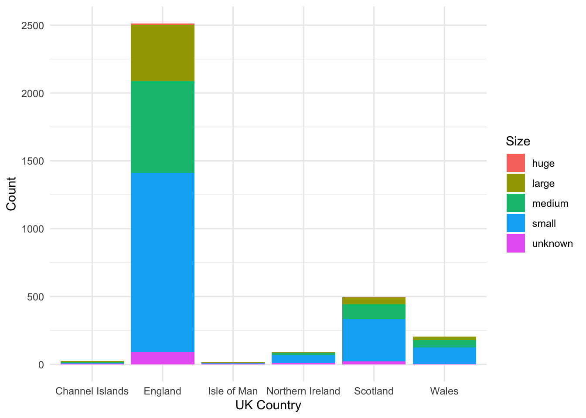
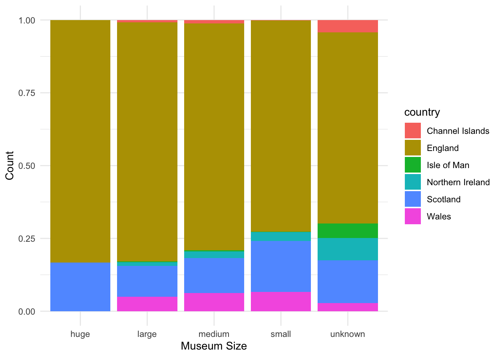
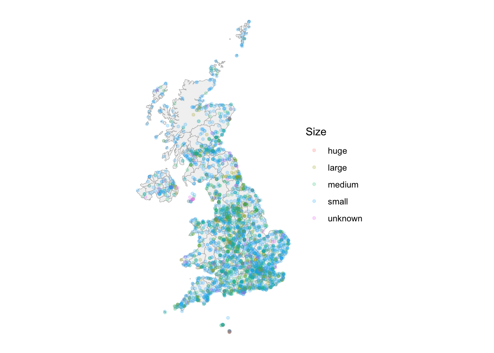
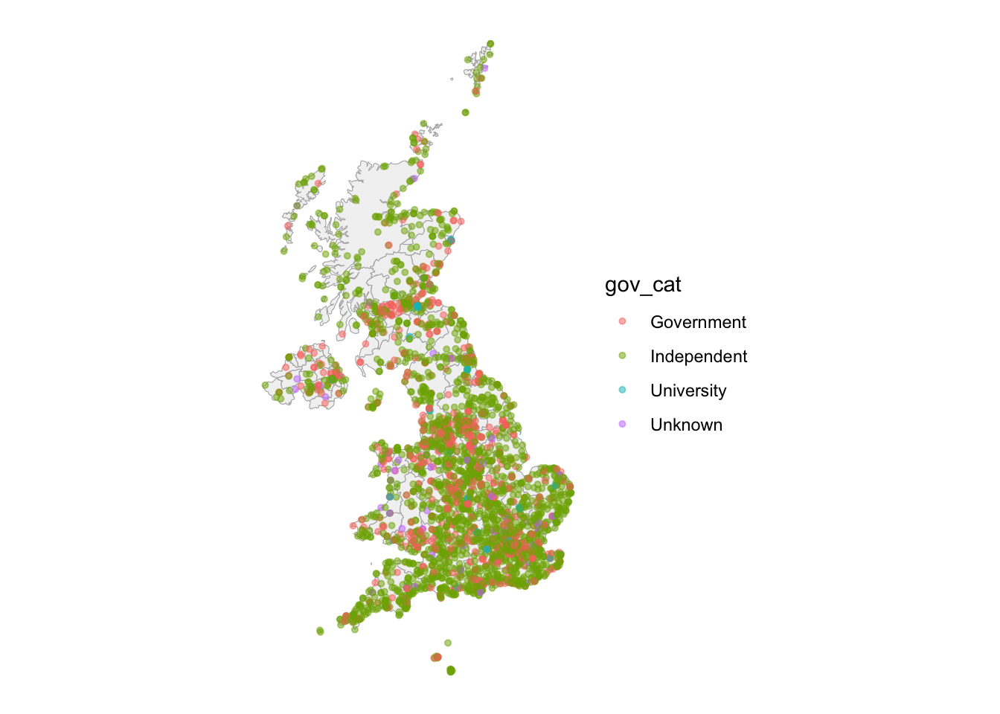
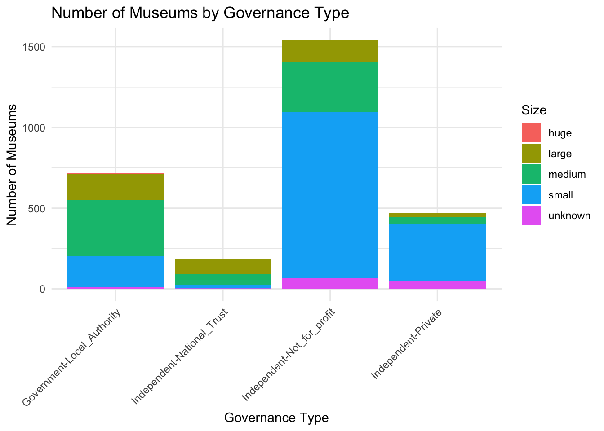

Museums are cultural landmarks, preserving the diverse history and heritage of the United Kingdom. This project explores the spatial distribution, types, and key characteristics of museums across England, Scotland, Wales, and Northern Ireland. By leveraging open data from TidyTuesday, I visualize the UK’s museum landscape and examine how different governance models, subject matters, and locations shape the museum sector. Through this analysis, I hope to contribute to a better understanding of the cultural infrastructure of the UK and highlight the important role museums play in connecting communities with their past.
6.2 Data Acquisition and Preparation
For this analysis, I’m using data from the TidyTuesday project in 2022 (https://github.com/rfordatascience/tidytuesday/tree/main/data/2022/2022-11-22), which is sourced from Museums UK, providing details on thousands of museums, their locations, categories, and governance.
# Load required packageslibrary(tidyverse)
── Attaching core tidyverse packages ──────────────────────── tidyverse 2.0.0 ──
✔ dplyr 1.1.4 ✔ readr 2.1.5
✔ forcats 1.0.0 ✔ stringr 1.5.1
✔ ggplot2 3.5.1 ✔ tibble 3.2.1
✔ lubridate 1.9.4 ✔ tidyr 1.3.1
✔ purrr 1.0.4
── Conflicts ────────────────────────────────────────── tidyverse_conflicts() ──
✖ dplyr::filter() masks stats::filter()
✖ dplyr::lag() masks stats::lag()
ℹ Use the conflicted package (<http://conflicted.r-lib.org/>) to force all conflicts to become errors
library(sf)
Linking to GEOS 3.11.0, GDAL 3.5.3, PROJ 9.1.0; sf_use_s2() is TRUE
library(ggplot2)library(maps)
Attaching package: 'maps'
The following object is masked from 'package:purrr':
map
Registered S3 method overwritten by 'mosaic':
method from
fortify.SpatialPolygonsDataFrame ggplot2
The 'mosaic' package masks several functions from core packages in order to add
additional features. The original behavior of these functions should not be affected by this.
Attaching package: 'mosaic'
The following object is masked from 'package:Matrix':
mean
The following objects are masked from 'package:dplyr':
count, do, tally
The following object is masked from 'package:purrr':
cross
The following object is masked from 'package:ggplot2':
stat
The following objects are masked from 'package:stats':
binom.test, cor, cor.test, cov, fivenum, IQR, median, prop.test,
quantile, sd, t.test, var
The following objects are masked from 'package:base':
max, mean, min, prod, range, sample, sum
Rows: 4191 Columns: 35
── Column specification ────────────────────────────────────────────────────────
Delimiter: ","
chr (24): museum_id, Name_of_museum, Address_line_1, Address_line_2, Village...
dbl (11): Latitude, Longitude, DOMUS_identifier, Area_Deprivation_index, Are...
ℹ Use `spec()` to retrieve the full column specification for this data.
ℹ Specify the column types or set `show_col_types = FALSE` to quiet this message.
Let’s take a quick look at the data, it includes 35 variables – we may want to clean the data to keep the tidiness.
# Inspect datahead(museums)
# A tibble: 6 × 35
museum_id Name_of_museum Address_line_1 Address_line_2 Village,_Town_or_Cit…¹
<chr> <chr> <chr> <chr> <chr>
1 mm.New.1 Titanic Belfa… 1 Olympic Way <NA> Belfast
2 mm.aim.12… The Woodland … <NA> Brokerswood nr Westbury
3 mm.domus.… Warwickshire … Warwick Colle… Horticulture … Moreton Morrell
4 mm.aim.04… Battle Of Flo… La Robeline Mont des Corv… St Ouen
5 mm.aim.04… Jet Age Museum 57 Crown Drive Bishops Cleeve Cheltenham
6 mm.aim.04… Jewish Milita… c/o Jewish Mu… Raymond Burto… London
# ℹ abbreviated name: ¹`Village,_Town_or_City`
# ℹ 30 more variables: Postcode <chr>, Latitude <dbl>, Longitude <dbl>,
# Admin_area <chr>, Accreditation <chr>, Governance <chr>, Size <chr>,
# Size_provenance <chr>, Subject_Matter <chr>, Year_opened <chr>,
# Year_closed <chr>, DOMUS_Subject_Matter <chr>, DOMUS_identifier <dbl>,
# Primary_provenance_of_data <chr>,
# Identifier_used_in_primary_data_source <chr>, …
# data cleaningmuseums_clean <- museums %>%select(Name_of_museum,Latitude,Longitude,Admin_area, Accreditation,Governance,Size,Subject_Matter,Year_closed) %>%# keep only useful variablesfilter(Year_closed =="9999:9999") %>%# only look at the open museumsmutate(country =str_trim(str_split(Admin_area, "/", simplify =TRUE)[,2])) %>%mutate(subject =str_trim(str_split(Subject_Matter, "-", simplify =TRUE)[,1])) %>%mutate(gov_cat =str_trim(str_split(Governance, "-", simplify =TRUE)[,1])) %>%select(-Admin_area,-Subject_Matter,-Year_closed) # delete the variables that we've already organized
# prpare the map backgrounduk_countries <-ne_states(country ="United Kingdom", returnclass ="sf")
6.3 Analysis
ggplot(museums_clean, aes(x = country, fill = Size)) +geom_bar() +labs(x ="UK Country", y ="Count") +theme_minimal()

ggplot(museums_clean , aes(x = Size, fill = country)) +geom_bar(position ="fill") +labs(x ="Museum Size", y ="Count") +theme_minimal()

From the 2 plots above, we can observe that most UK museums are located in England, which has by far the largest number of museums in every size category. Scotland has the second highest count, followed by Wales and Northern Ireland, with the Channel Islands and Isle of Man having very few. Across all countries, small museums are the most common, while “huge” museums are rare everywhere.
ggplot() +geom_sf(data = uk_countries, fill ="gray95", color ="gray70") +geom_point(data = museums_clean,aes(x = Longitude, y = Latitude, color = Size),size =1.1, alpha =0.2 ) +coord_sf(xlim =c(-8, 2), ylim =c(49, 61)) +theme_void()

The map confirms our understanding about distribution of museums of different sizes – the majority of them are small. Now let’s shift to the the distribution of governance category by taking a quick look at the 2nd map.
ggplot() +geom_sf(data = uk_countries, fill ="gray95", color ="gray70") +geom_point(data = museums_clean,aes(x = Longitude, y = Latitude, color = gov_cat), size =1.1, alpha =0.5 ) +coord_sf(xlim =c(-8, 2), ylim =c(49, 61)) +theme_void()

We can see that the independent governance dominates the UK museum landscape, with government museums making up much smaller shares. Museums are most densely clustered in southern England but are spread across the country, including remote regions. In the following steps we would analyze the museum’s governance composition combining with the subgroups with bar plot.
ggplot(museums_clean, aes(x = gov_cat, fill = Governance)) +geom_bar() +theme_minimal()
The previous geographic map shows that museums are densely clustered in southern England, and independent museums dominate the landscape, particularly in England. This pattern is clearly reflected in both bar charts, too.
Meanwhile, both bar charts show that “Independent-Not_for_profit” and “Independent-Private” are by far the most common categories, together making up the majority of museums. Local authority-run museums are the main form of government governance, but they are much less numerous than independent ones.
Now, let’s focus on the most common governance types and the size composition within each type.
ggplot(museums_clean %>%filter(Governance %in%c("Independent-National_Trust", "Independent-Private","Government-Local_Authority","Independent-Not_for_profit")), aes(x = Governance, fill = Size)) +geom_bar() +theme_minimal() +theme(axis.text.x =element_text(angle =45, hjust =1)) +labs(x ="Governance Type",y ="Number of Museums",title ="Number of Museums by Governance Type" )

Overall, small and medium-sized museums dominate each governance type, but government-managed museums are more likely to be medium or large compared to independents. This pattern suggests that independent museums are more numerous but generally smaller, while government-run museums, though fewer, tend to be larger institutions.
This distribution suggests the UK government prioritizes supporting fewer, larger museums with broad public impact. Meanwhile, the independent and nonprofit sector are encouraged to play a role in operating the many smaller, local museums, reflecting strong grassroots involvement and cultural diversity.
6.4 Conclusion
My analysis highlights the rich and varied landscape of museums across the United Kingdom. The overwhelming presence of independent museums—especially small, not-for-profit, and private institutions—underscores the vital role of local communities and grassroots organizations in preserving and sharing culture. While England dominates in sheer number and variety, the contributions from Scotland, Wales, and Northern Ireland further illustrate the variety of regional heritage.
Government involvement, while less extensive in number, is clearly focused on supporting larger institutions with wider public reach. This targeted approach allows the government to maintain and promote key national assets, while also enabling independent organizations to flourish at the local level – it has achieved its balance.
Overall, museums remain crucial to connecting people with history, art, and science. The patterns revealed here point to a healthy ecosystem where both state and independent actors contribute tothe cultural heritage for future generations.
6.5 Reference
TidyTuesday. (2022). Museums Dataset. Retrieved from https://github.com/rfordatascience/tidytuesday/tree/main/data/2022/2022-11-22
Source Code
---title: "Mapping the Museums of the United Kingdom"format: html---## IntroMuseums are cultural landmarks, preserving the diverse history and heritage of the United Kingdom. This project explores the spatial distribution, types, and key characteristics of museums across England, Scotland, Wales, and Northern Ireland.By leveraging open data from TidyTuesday, I visualize the UK’s museum landscape and examine how different governance models, subject matters, and locations shape the museum sector.Through this analysis, I hope to contribute to a better understanding of the cultural infrastructure of the UK and highlight the important role museums play in connecting communities with their past.---## Data Acquisition and PreparationFor this analysis, I’m using data from the TidyTuesday project in 2022 (https://github.com/rfordatascience/tidytuesday/tree/main/data/2022/2022-11-22), which is sourced from Museums UK, providing details on thousands of museums, their locations, categories, and governance.```{r}# Load required packageslibrary(tidyverse)library(sf)library(ggplot2)library(maps)library(rnaturalearth)library(RColorBrewer)library(mosaic)``````{r}# Import datamuseums <- readr::read_csv("https://raw.githubusercontent.com/rfordatascience/tidytuesday/main/data/2022/2022-11-22/museums.csv") ```Let's take a quick look at the data, it includes 35 variables -- we may want to clean the data to keep the tidiness.```{r}# Inspect datahead(museums)``````{r}# data cleaningmuseums_clean <- museums %>%select(Name_of_museum,Latitude,Longitude,Admin_area, Accreditation,Governance,Size,Subject_Matter,Year_closed) %>%# keep only useful variablesfilter(Year_closed =="9999:9999") %>%# only look at the open museumsmutate(country =str_trim(str_split(Admin_area, "/", simplify =TRUE)[,2])) %>%mutate(subject =str_trim(str_split(Subject_Matter, "-", simplify =TRUE)[,1])) %>%mutate(gov_cat =str_trim(str_split(Governance, "-", simplify =TRUE)[,1])) %>%select(-Admin_area,-Subject_Matter,-Year_closed) # delete the variables that we've already organized``````{r}# prpare the map backgrounduk_countries <-ne_states(country ="United Kingdom", returnclass ="sf")```---## Analysis```{r}ggplot(museums_clean, aes(x = country, fill = Size)) +geom_bar() +labs(x ="UK Country", y ="Count") +theme_minimal()ggplot(museums_clean , aes(x = Size, fill = country)) +geom_bar(position ="fill") +labs(x ="Museum Size", y ="Count") +theme_minimal()```From the 2 plots above, we can observe that most UK museums are located in England, which has by far the largest number of museums in every size category. Scotland has the second highest count, followed by Wales and Northern Ireland, with the Channel Islands and Isle of Man having very few. Across all countries, small museums are the most common, while “huge” museums are rare everywhere.```{r}ggplot() +geom_sf(data = uk_countries, fill ="gray95", color ="gray70") +geom_point(data = museums_clean,aes(x = Longitude, y = Latitude, color = Size),size =1.1, alpha =0.2 ) +coord_sf(xlim =c(-8, 2), ylim =c(49, 61)) +theme_void()```The map confirms our understanding about distribution of museums of different sizes -- the majority of them are small. Now let's shift to the the distribution of governance category by taking a quick look at the 2nd map. ```{r}ggplot() +geom_sf(data = uk_countries, fill ="gray95", color ="gray70") +geom_point(data = museums_clean,aes(x = Longitude, y = Latitude, color = gov_cat), size =1.1, alpha =0.5 ) +coord_sf(xlim =c(-8, 2), ylim =c(49, 61)) +theme_void()```We can see that the independent governance dominates the UK museum landscape, with government museums making up much smaller shares. Museums are most densely clustered in southern England but are spread across the country, including remote regions. In the following steps we would analyze the museum's governance composition combining with the subgroups with bar plot. ```{r}ggplot(museums_clean, aes(x = gov_cat, fill = Governance)) +geom_bar() +theme_minimal()gov_counts <- museums_clean %>%count(Governance) %>%arrange(n) %>%mutate(Governance =factor(Governance, levels = Governance)) ggplot(gov_counts, aes(x = Governance, y = n)) +geom_col(fill ="steelblue") +geom_text(aes(label = n), vjust =-0.3, size =3) +theme_minimal() +theme(axis.text.x =element_text(angle =45, hjust =1)) +labs(x ="Governance Type",y ="Number of Museums",title ="Number of Museums by Governance Type" )```The previous geographic map shows that museums are densely clustered in southern England, and independent museums dominate the landscape, particularly in England. This pattern is clearly reflected in both bar charts, too. Meanwhile, both bar charts show that “Independent-Not_for_profit” and “Independent-Private” are by far the most common categories, together making up the majority of museums. Local authority-run museums are the main form of government governance, but they are much less numerous than independent ones.Now, let's focus on the most common governance types and the size composition within each type.```{r}ggplot(museums_clean %>%filter(Governance %in%c("Independent-National_Trust", "Independent-Private","Government-Local_Authority","Independent-Not_for_profit")), aes(x = Governance, fill = Size)) +geom_bar() +theme_minimal() +theme(axis.text.x =element_text(angle =45, hjust =1)) +labs(x ="Governance Type",y ="Number of Museums",title ="Number of Museums by Governance Type" )```Overall, small and medium-sized museums dominate each governance type, but government-managed museums are more likely to be medium or large compared to independents. This pattern suggests that independent museums are more numerous but generally smaller, while government-run museums, though fewer, tend to be larger institutions.This distribution suggests the UK government prioritizes supporting fewer, larger museums with broad public impact. Meanwhile, the independent and nonprofit sector are encouraged to play a role in operating the many smaller, local museums, reflecting strong grassroots involvement and cultural diversity.---## ConclusionMy analysis highlights the rich and varied landscape of museums across the United Kingdom. The overwhelming presence of independent museums—especially small, not-for-profit, and private institutions—underscores the vital role of local communities and grassroots organizations in preserving and sharing culture. While England dominates in sheer number and variety, the contributions from Scotland, Wales, and Northern Ireland further illustrate the variety of regional heritage.Government involvement, while less extensive in number, is clearly focused on supporting larger institutions with wider public reach. This targeted approach allows the government to maintain and promote key national assets, while also enabling independent organizations to flourish at the local level -- it has achieved its balance. Overall, museums remain crucial to connecting people with history, art, and science. The patterns revealed here point to a healthy ecosystem where both state and independent actors contribute tothe cultural heritage for future generations.---## ReferenceTidyTuesday. (2022). Museums Dataset. Retrieved from https://github.com/rfordatascience/tidytuesday/tree/main/data/2022/2022-11-22